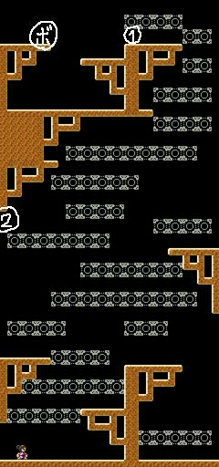
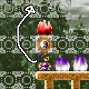
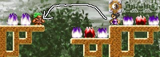
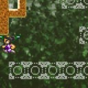

２ボスも難しいという方がいらっしゃいましたので、
ちょろっと攻略してみたいと思います。
|  | ２-ＢＯＳＳ 白黒共通 縦に長い面で、スクロールがずれてしまうので やっつけで済みませんが、 １面ボスと違って、ボスは一撃で倒せるので、 |
炎の対処の仕方
 |
 |
 |
| 上から降ってくる炎は、 ブロックを出現させて 防ぎましょう。 その後横からすり抜けて 足場と屋根を 作っていきます。 |
”1”の場所で、頭上にブロックを作って待ちます。 炎が降ってきたら、ジャンプで飛び越えて、 ボスに攻撃できます。 難しかったら、いったんボスの真下に入って、 そこから再びジャンプしてボスに攻撃してもいいです。 |
ちなみに、マップ開始直後、 速攻で”２”の位置に行けば ブロックで炎を防ぐ手間が 省けます。 |
以上、簡単ですが、こんな感じで何とかなりますかね。